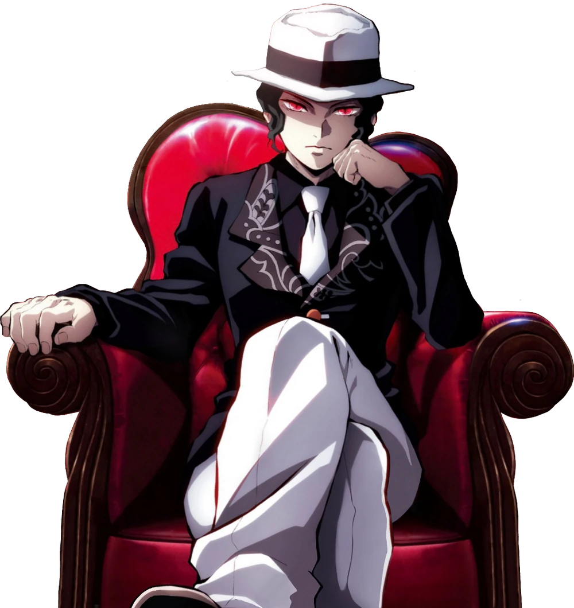
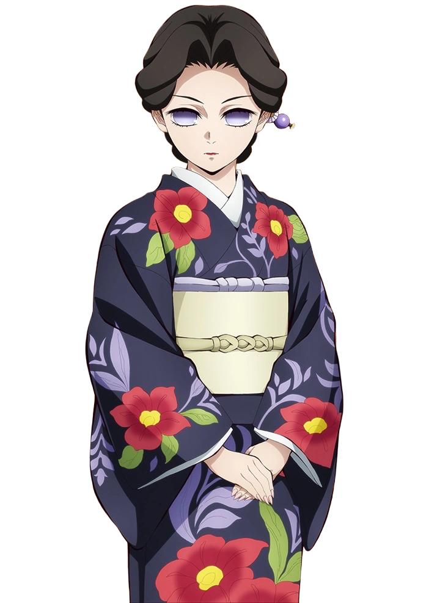
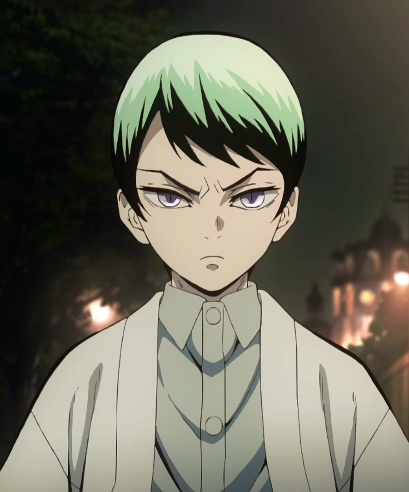
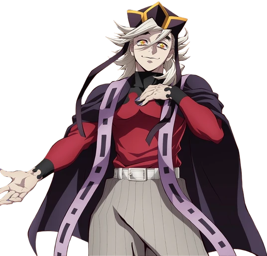
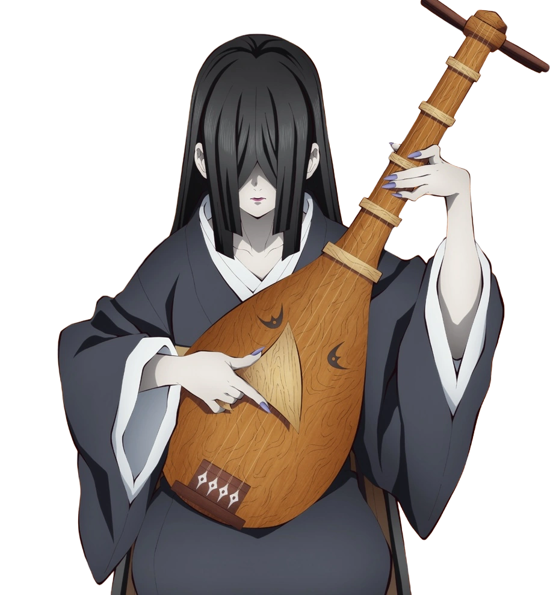
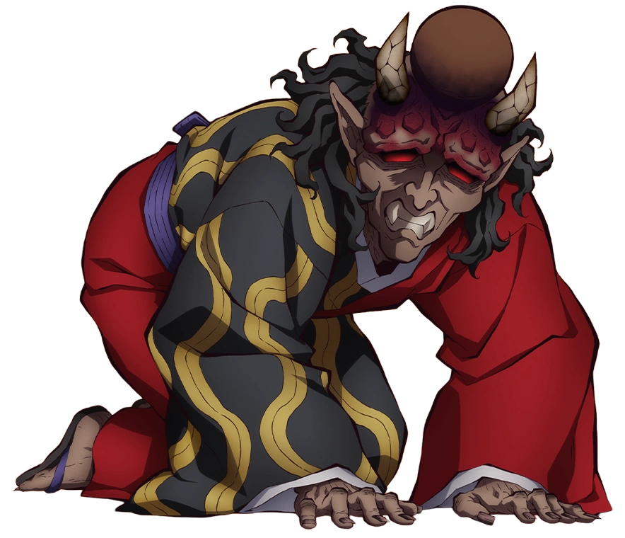
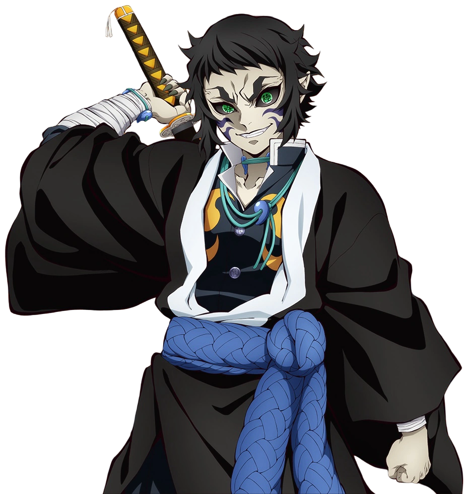
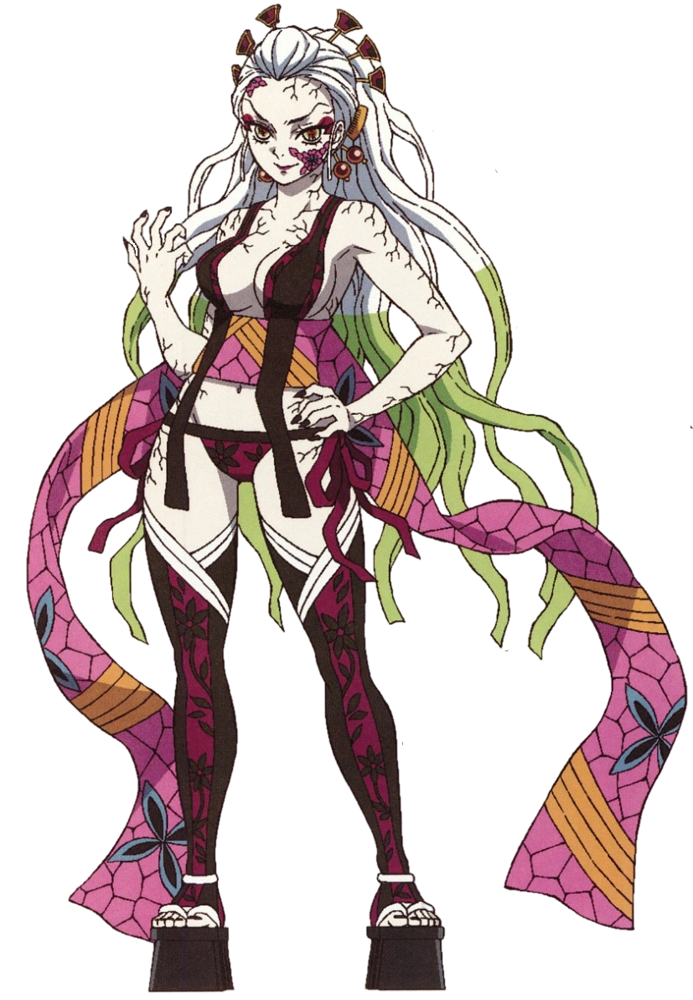

Our Characters
Demons

Muzan Kibutsuji
short bio
Muzan Kibutsuji is the main antagonist of *Demon Slayer: Kimetsu
no Yaiba* and the first demon to ever exist. He is cruel,
intelligent, and obsessed with becoming truly immortal. Muzan
commands fear and control over all other demons, punishing
failure without mercy. His presence represents pure evil and is
the ultimate enemy of the Demon Slayer Corps. 🌑🩸

Tamayo
short bio
Tamayo is a kind and intelligent doctor who specializes in demon
research. She works alongside Yushiro, her loyal companion, to
find ways to defeat demons without harming humans. Despite
living a long life, she remains compassionate and dedicated to
helping others. Tamayo’s calm and gentle demeanor hides a strong
resolve shaped by her past struggles.

Yushiro
short bio
Yushiro is a loyal and protective demon who serves Tamayo
faithfully. He possesses the ability to manipulate his
appearance, allowing him to hide or deceive when needed. Despite
his demonic nature, he is gentle and caring toward those he
trusts. Yushiro is dedicated to helping Tamayo in her mission to
find cures and fight demons safely.

Susamaru
short bio
Susamaru is a fierce and energetic demon who enjoys fighting
with her deadly temari balls. She is loyal to Muzan and takes
pride in showing off her strength. Her playful and confident
personality hides a ruthless and dangerous side. Susamaru
thrives in battle, seeking strong opponents to challenge her
skills.

Kokushibo
short bio
Kokushibo is a powerful Upper Moon One demon, feared for his
unmatched swordsmanship. Once a human samurai, he became a demon
seeking eternal strength and mastery. He wields six eyes that
enhance his combat abilities and perception. Kokushibo’s calm
and disciplined demeanor hides a relentless drive for perfection
and dominance.

Doma
short bio
Doma is a cunning and powerful Upper Moon Two demon, feared for
his cold and cheerful demeanor. He feeds on humans without
remorse, viewing their deaths as a way to gain strength. Despite
his outward friendliness, he is ruthless and manipulative,
making him extremely dangerous. Doma’s immense power and
charisma make him a terrifying presence among demons.

Akaza
short bio
Akaza is a fierce and powerful Upper Moon Three demon, known for
his incredible martial arts skills. He values strength above all
and seeks worthy opponents to test his abilities. Despite his
violent nature, he once had a compassionate human past that
shaped his inner conflict. Akaza’s relentless drive and combat
prowess make him one of the most formidable demons.

Nakime
short bio
Nakime is a mysterious Upper Moon Four demon who controls the
Infinity Castle with her Biwa. Calm and composed, she uses her
music to manipulate space and trap her enemies. Her loyalty to
Muzan is unwavering, making her a dangerous and cunning
opponent. Nakime’s eerie presence and strategic mind make her a
formidable threat to Demon Slayers.

Hantengu
short bio
Hantengu is a deceptive Upper Moon Four demon who can split into
multiple clones, each representing a different emotion. He hides
his cowardice behind a cruel and cunning personality. Loyal to
Muzan, he uses his powers to manipulate and terrify his enemies.
Hantengu’s unpredictable nature and strength make him a
dangerous and unsettling foe.

Gyokko
short bio
Gyokko is a grotesque and cunning Upper Moon Five demon who
delights in creating monstrous pottery-like creatures. He is
obsessed with art and beauty, often using humans as raw material
for his twisted creations. Loyal to Muzan, he fights with
creativity and cruelty. Gyokko’s unique abilities and eerie
appearance make him a terrifying and unpredictable enemy.

Kaigaku
short bio
Kaigaku is a former Demon Slayer turned Upper Moon Six demon,
skilled in Thunder Breathing techniques. Ambitious and prideful,
he craves power and recognition, which led him down a dark path.
Despite his transformation, traces of his past human emotions
occasionally surface. Kaigaku’s speed, strength, and
ruthlessness make him a formidable opponent in battle.

Gyutaro
short bio
Gyutaro is a vicious Upper Moon Six demon, known for his deadly
blood-manipulating abilities. He shares a deep bond with his
sister, Daki, and fights fiercely to protect her. His cruel and
violent nature makes him a terrifying presence in battle.
Gyutaro’s strength, speed, and resilience make him one of the
most dangerous demons in the series.

Daki
short bio
Daki is a cunning Upper Moon Six demon who uses her obi sashes
as deadly weapons. She shares a close bond with her brother,
Gyutaro, and relies on him for support in battle. Proud and
vain, she takes pleasure in defeating and tormenting her
enemies. Daki’s beauty, speed, and lethal skills make her a
dangerous and memorable foe.

Enmu
short bio
Enmu is a manipulative Lower Moon One demon who can control
dreams to trap and harm his victims. Loyal to Muzan, he uses his
powers to torment humans and test his strength. Despite his
cowardly and sly nature, he poses a serious threat to Demon
Slayers. Enmu’s cunning abilities and eerie presence make him a
memorable and dangerous demon.